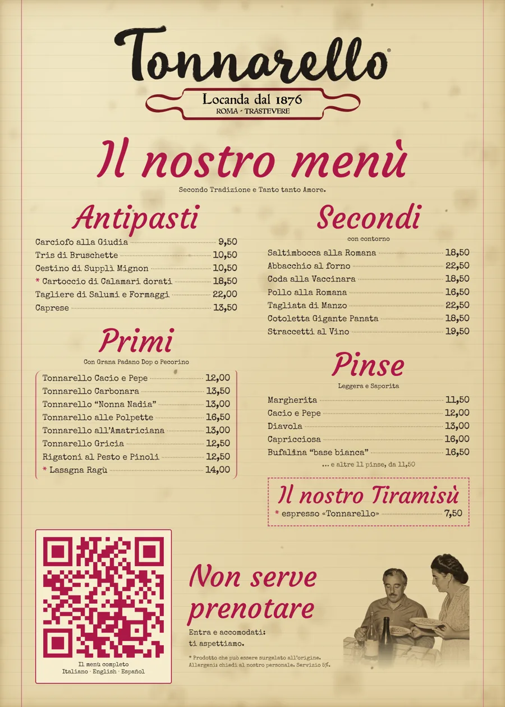
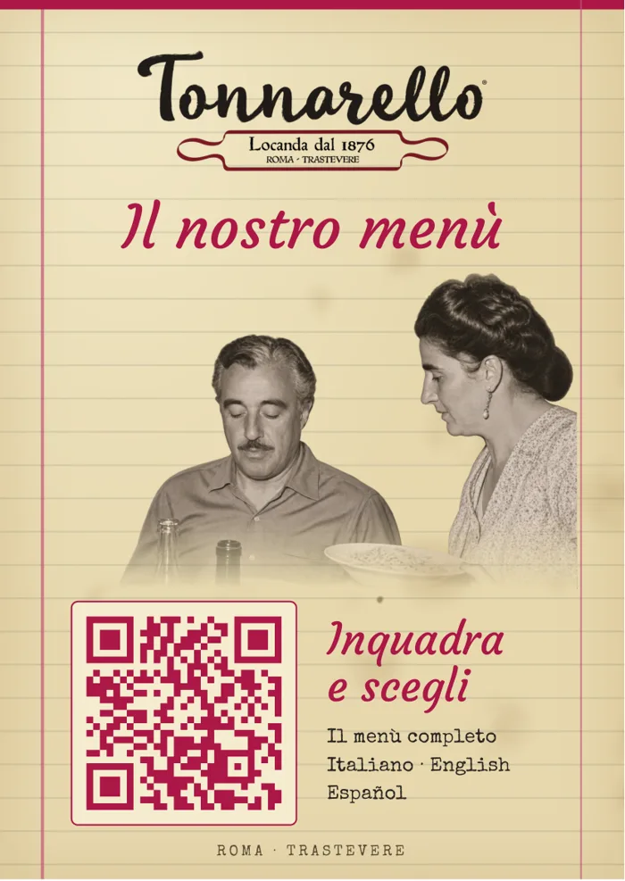

Il vostro menù,
in ogni telefono
Per Andrea e Simone. Qui trovate tutto in un solo posto: il menù da provare, la proposta e i materiali per la strada e per i tavoli.
Provatelo voi
Il menù di Tonnarello Original in italiano, inglese e spagnolo, con la vostra carta a righe, i titoli rossi e la macchina da scrivere. Apritelo dal telefono e cambiate lingua in alto.
Apri il menùCosa comprende e quanto costa
Dieci pagine: come funziona, cosa guadagna Tonnarello, come lo gestite voi dal foglio Google, i prezzi e i prossimi passi. Un solo pagamento, nessun abbonamento.
Apri la proposta (PDF)Cavalletto e cartoncino QR
Il cavalletto per chi aspetta in fila e il cartoncino per i tavoli, con il QR che apre il menù. Qui li vedete in anteprima; con la consegna ricevete i file per la tipografia.


Avete domande?
Scriveteci su WhatsApp o su Instagram: rispondiamo in italiano.
WhatsApp InstagramPagina privata: la vede solo chi ha il link.